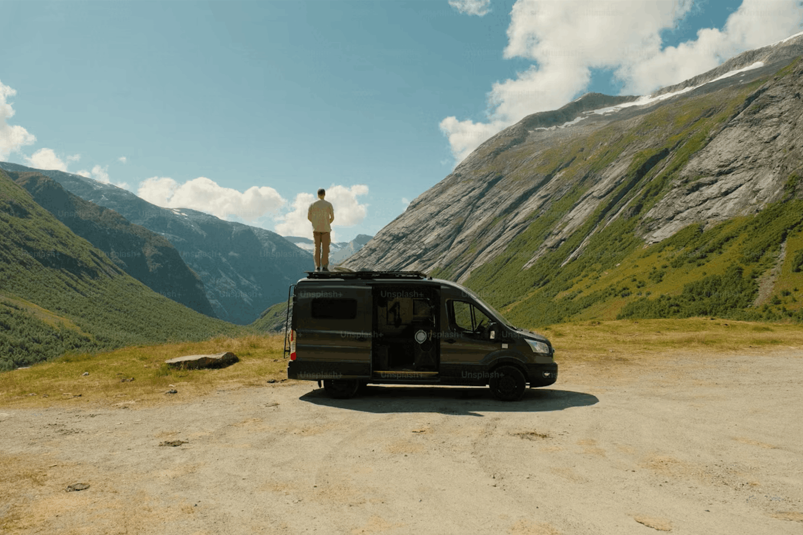
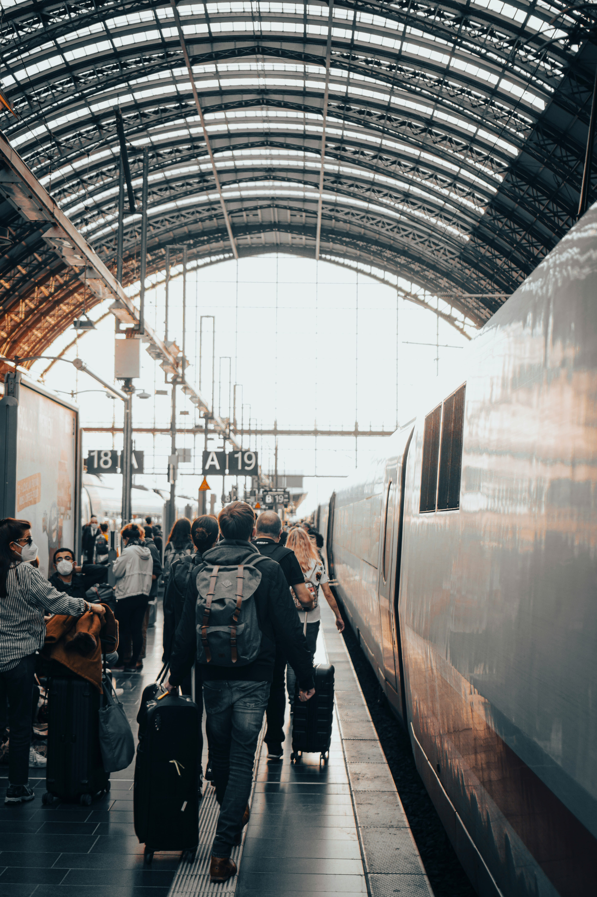
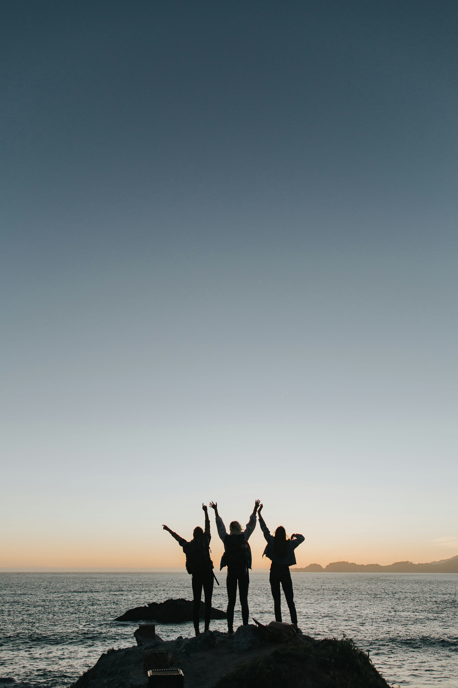

Traveling through new cities, navigating new systems, and finding new ways to move through the world. Here's how travel taught me adaptability and empathy in design.

Every train ride, airport line, and subway map revealed patterns of flow, rhythm, and friction. Here's how movement influenced my creative process.

The journey is full of people who taught me to design with empathy, listening first and building second. Here's how meeting people abroad shaped my approach to user-centered design.
I'm Juliana, a product designer with a curiosity for how people think, feel, and interact with the world. I study Human-Centered Design and Development at Penn State, where I explore how creativity and technology can come together to create experiences that feel intuitive and human.
Traveling changed how I see both design and the world. Every city taught me something different, from how people navigate, communicate, and find beauty in everyday interactions. Every challenge I faced reflected a real-world user experience problem. I learned that good design, like good travel, is about curiosity, empathy, and noticing the details that make an experience meaningful.